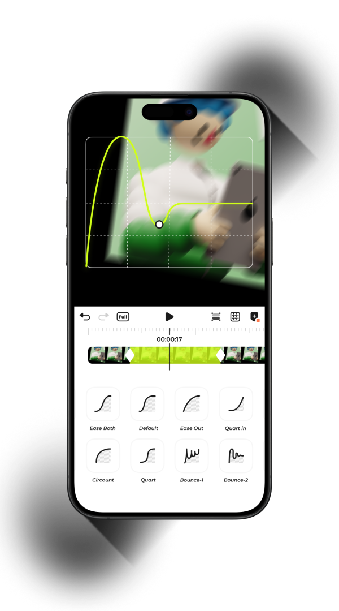

Blurrr 为什么在移动端能做桌面级特效——全参数关键帧背后的设计取舍
Blurrr 把桌面级非线性编辑器的核心能力搬进了手机，代价是什么？从关键帧系统到混合模式，拆解它的技术选择。
一个不那么严肃的问题：手机剪片，为什么能出桌面级的活？
我第一次在 Blurrr 上看到一段 MAD 剪辑成品的时候，愣了几秒。不是因为特效有多炫——MAD 圈里特效炫的东西多了——而是因为我清楚，这段视频里用到的每一帧参数，都是在一台骁龙芯片的手机上实时渲染出来的。
逐帧关键帧的变速曲线、20 多种混合模式、置换图 + 湍流置换的双重扭曲、运动模糊脉冲的精准卡点——这套组合拳，两年前我还在 Premiere + After Effects 上用 PC 做。现在它在一块 6 寸屏幕上跑，而且预览不掉帧。
这不正常。移动端视频编辑器的普遍套路是：给你一排预设滤镜、几个一键模板，点一下出效果。blurrr官网走的是另一条路——把"全参数可控"作为第一原则，每个效果的每个参数都能打关键帧。这条路的尽头是桌面级，但中间每一步都在跟手机的硬件限制较劲。
核心架构：全参数关键帧是怎么铺到底的
Blurrr 的底层设计可以用一句话概括：时间轴上的任何可调节参数，都是一个独立的关键帧轨道。
这听起来像废话——Premiere、AE 都是这么做的。但 Blurrr 把这条原则贯彻到了移动端编辑器几乎从不触及的角落：
- 混合模式本身可以打关键帧，从"正常"平滑过渡到"正片叠底"
- 湍流置换的"偏移"和"演化"参数可以各自独立打帧，让扭曲纹理流动起来
- 时间重映射不是简单的"快放/慢放"，而是一条可编辑的速度曲线
这个设计的源头大概是 AE 的表达式系统，但 Blurrr 做了一个重要的简化：不开放表达式，用曲线编辑取而代之。用户不需要写代码，直接在速度曲线上拉控制点，就能做出缓入缓出、先快后慢的变速效果。

这套体系最直接的好处是参数之间完全解耦。湍流置换有五个参数：数量、大小、偏移、复杂度、演化——每个都能单独打帧、互不干扰。你可以让"数量"在节拍点脉冲，同时让"偏移"持续流动，"演化"慢速旋转，三者叠加出的效果是预设模板永远给不出来的。
混合模式关键帧：一个优雅但有代价的决定
混合模式（Blending Mode）的关键帧支持，是我觉得 Blurrr 最有意思的设计之一。
先说背景：混合模式本质上是两个图层像素之间的计算公式——正片叠底是两色相乘、屏幕是取反后相乘、差值是相减取绝对值。这个东西在绝大多数移动端编辑器里是"静态属性"：选了就选了，不能变。
Blurrr 让它变成了一个可动画参数。blurrr文档里列了 20 多种模式，全部支持关键帧过渡。比如从"正常"切到"正片叠底"，中间态会自动用不透明度渐变过渡，效果很自然。
但这里有一个刻意没藏起来的取舍：某些模式之间的过渡会出现奇怪的中间色。从"正片叠底"到"屏幕"，一个是暗化公式、一个是亮化公式，中间态没有数学上的平滑插值路径，所以 Blurrr 只能硬算，结果可能出现灰蒙蒙的脏色。
它的解法不是去修正算法（那会显著增加 GPU 负担），而是在文档里直接告诉你：配合不透明度关键帧使用——先把混合模式瞬时切换，再用不透明度做淡入淡出，绕开中间态。这是一种很务实的工程师思维：承认边界，然后给你 workaround。
置换图 vs 湍流置换：可控性和零门槛的设计分岔
Blurrr 的两款扭曲特效放在一起看很有意思——它们解决的是同一个需求（让画面变形），但设计理念完全相反。
置换图（Displacement Map） 的思路是"借力"：你给我一张参考图，我用参考图的灰度值决定画面像素往哪推。亮区推一个方向，暗区推反方向。水波反射、文字擦除、水平错位故障风——都靠一张参考图搞定。
湍流置换（Turbulent Displace） 的思路是"自力更生"：不需要任何参考图，自己在画面上生成一层随机流体噪声，然后用噪声去扭曲原图。数量、大小、偏移、复杂度、演化五个参数控制扭曲的形态和运动。
| 维度 | 置换图 | 湍流置换 |
|---|---|---|
| 需要参考图 | ✅ 需要 | ❌ 不需要 |
| 可控性 | 高（参考图决定形变形状） | 中等（随机纹理） |
| 关键帧表现力 | 参考图层自身可以动画 | 偏移/演化/数量全可打帧 |
这两个特效可以叠加用——湍流做基础流体感，上面再叠一层小幅度的定向置换增加细节。Blurrr 没有在这两者之间选一个主推，而是把两个都给你，让你自己选。这种"工具箱思维"和那些把特效做成"一键风格包"的产品完全不同。
硬件边界：骁龙芯片为什么更顺
安装包从官方下载就能拿到，Android 和 iOS 版本都有。装好之后你第一件注意到的事可能就是：Blurrr 的预览窗口实时渲染能力对设备算力有硬性要求。官方文档里有一段很实在的性能提示：
- 图层数量超过 15 个、特效叠加密集时，预览可能掉帧
- Android 机型上 GPU 解码能力差异较大，高通骁龙芯片机型通常表现更好
- 降低预览分辨率可以缓解卡顿
为什么骁龙表现更好？简单说就是 GPU 计算能力和视频硬解码优化两条线。Blurrr 的混合模式计算、置换图采样、湍流置换的噪声生成都跑在 GPU 上，骁龙的 Adreno 系列 GPU 在并行计算能力上确实比同级别的联发科 Maleoon 或苹果 A 系 GPU 更适配 Android 端的图形 API。

还有一个细节：AI 补帧只在极慢动作（0.25× 以下）时才推荐开启。这是一个很聪明的产品判断——AI 补帧算力开销大，不是所有场景都值得用。正常速度的变速用时间重映射就够了，只有当你真的需要"每一帧都是全新生成"的丝滑慢动作时才打开。
所以 Blurrr 适合谁？
如果上面的拆解没有把你吓跑，Blurrr 大概率是你的菜。
它适合两类人：MAD 剪辑师——需要把动漫素材和音乐节拍精确同步，全参数关键帧 + 音频波形可视化是刚需；特效控——喜欢折腾混合模式、置换图、粒子系统的各种组合，不满足于预设滤镜。
它不太适合：想快速出片的内容创作者——全参数可控意味着你得自己调每一个滑块、打每一帧关键帧，没有"一键电影感"；预算紧张的安卓用户——骁龙以外的芯片预览可能会卡，导出也要等更久。
我自己的感受是，Blurrr 把"移动端"这个平台的下限抬得比想象中高。不是说手机能完全替代 PC，而是说当你知道手机上能做什么之后，你会重新思考：是不是真的需要为一段 15 秒的 MAD 剪辑，打开那台 20 斤的笔记本？